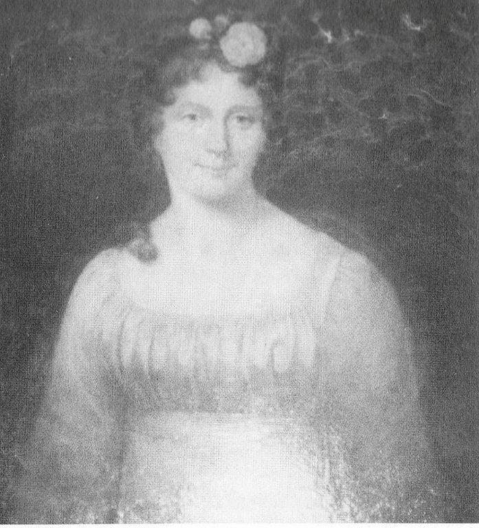
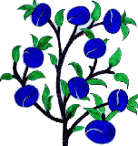
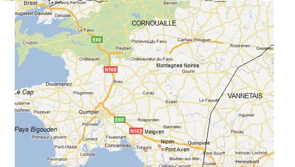
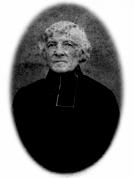
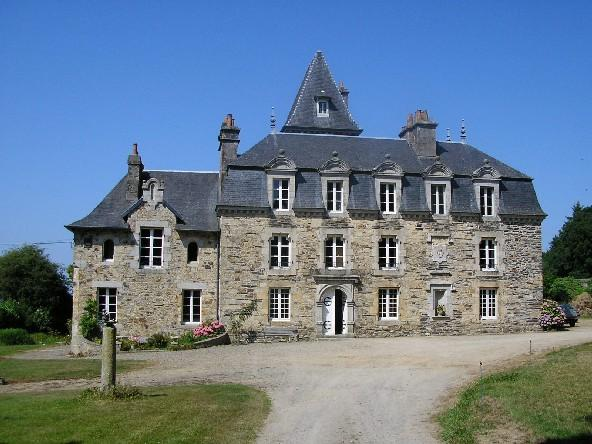
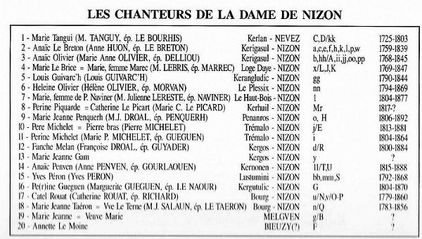

Complainte de la Dame de Nizon
Lament for the Lady of Nizon
Dialecte de Cornouaille
|
|
 Ursule-Feydeau de Vaugien (1776-1847) An 'Itron Nizon' (la Dame de Nizon) |
|
Mélodie - Tune
(Cf. Bosenn Heliant ).
| Français | English |
|---|---|
|
Le Plessix-Nizon est en deuil ! Le soleil, comme on peut le voir, S'obscurcit d'un nuage noir. 2. - Dès lors que ce feu s'est éteint, Qui donc calmera notre faim, Nous vêtira, nous soignera? Et nos plaies, qui les guérira? 3. De Quimperlé jusqu'à Nizon Tous agenouillés, nous pleurions ; Terrassés, au bord du chemin Sur quatre lieues, par le chagrin. 4. Et Chaque malheureux qui pleure Devant ta dernière demeure, Voudra fleurir ta sépulture Aussi longtemps que sa vie dure. 5. Le deuil qui frappe le manoir, Dame, affecte tout le terroir! Adieu, mère si douce et bonne! Fallait-il que cette heure sonne? 6. - Mes chers pauvres, je m'interroge. Vos pleurs méritent bien l'éloge. Mais ne sont-ils pas vains, ces pleurs? Notre mère est dans le bonheur. 7. Un bonheur qui sera le vôtre: Avec Jésus et les apôtres, La Vierge, les saintes, les saints, Son époux, ses filles, les siens. 8. Le prêtre assis près de son lit D'une voix douce en son nom dit: - Venez, saintes et saints du ciel , L'accueillir au havre éternel. 9. Afin que je puisse avec vous Aimer Dieu, notre père à tous, Au ciel et pour l'éternité. - C'est à ces mots qu'elle a passé. 10. Car elle a passé doucement, Cette âme, comme en souriant, Voyant que la porte, peut-être, Du Paradis s'était ouverte. 11. Ce fut le jour de Notre-Dame Du Carmel, qu'elle rendit l'âme! Ce fut le soir d'un vendredi, Ce jour où le Sauveur périt. 12. Chers pauvres, ne gémissez pas Cessez de pleurer son trépa.s Si vous l'aimez: les blés étaient Mûrs. Les anges les ont coupés. 13. Le vieil arbre devait tomber, Le Maître devait l'emporter; Mais beaucoup de jeunes surgeons Se pressent au pied de son tronc. 14. On verra sous les feuilles vertes, Des nids où des oiseaux à naître Chanteront la gloire de Dieu Qui prend grand soin de l'homme et d'eux... 15. Disons tous un De Profundis Sur la tombe des Du Plessix. Qu'on y écrive: "ICI REPOSE L'HONORABLE MERE DES PAUVRES".- 16. Ce chant celui qui l'écrivit Fut curé de Riec jadis. Il aimait et il aime encor La dame même après sa mort. 17. Chaque matin, tant qu'il vivra, Pour la vieille dame, il dira Un Memento . Et puisse-t-il La retrouver au Paradis ! |
Ursula Feydeau du Plessix. A black cloud hangs in the heavens. Everywhere the sun light darkens. 2. - If you passed away, dear mother, Who shall now appease our hunger? And provide clothes and remedy And heal the wounds of the needy? 3. Over four leagues a single whine. From Quimperlé we formed a line Up to Nizon. All of us cried Upon our knees by the wayside. 4. And we cried following the hearse To commit you to grave and earth! On your tomb also did we cry, And shall we cry until we die! 5. Sad bereavement for the manor And the countryside all over! Farewell, mother so good-hearted! Why must we so soon be parted? 6. - My dear poor, for the tears you shed, Words of highest praise must be said. And yet there is no need to cry She has her share of Heaven's joy. 7. She dwells with the Holy Virgin, Jesus and the Apostles in Heaven with the other saints, and With her daughters and her husband. 8. The priest who sat by her bedside In a low voice said, as she died: " You all who dwell in Heaven's shrine Come and welcome this soul of mine. 9. That she might, if you welcome her, Love, like you, God who's our father In Paradise, forever more." And she died within the next hour. 10. She passed away, so calm and mild And the priest could see that she smiled As if she had seen Heaven's gate, Open to welcome her, in wait. 11. T' was Saint Mary of Carmel's day, The loveliest feast that you find may. For dying; a Friday evening, The day of Our Lord's suffering. 12. Poor, be silent, if you love her! Stop crying over your mother! The wheat must be reaped when it's ripe That's why the angels came and scythed. 13. Death has cut off the old tall wood. The Lord has carried home his good. Yet so many young shoots are left Of which old woods are not bereft. 14. The little birds will get the best Of their green leaves to build their nests And the praise of God they will chant Whose creatures never live in want. 15. Let us say a "De profundis" On the old grave of Du Plessix. And let us write on the ledger: POOR, SAY A PRAYER FOR YOUR MOTHER - 16. This lament was made by a priest Who was vicar of Riec parish. He loved and he will love always The lady who has passed away. 17. He will say as a morning prayer A "Memento" for his mother. He will, as long as he's alive. May he join her in paradise! |
(Textes bretons - Breton Texts)

|
Marie-Ursule Feydeau du Plessix-Nizon (ou de Vaugien)
.
La présente élégie fut composée, comme indiqué dans l'avant-dernière strophe, par M. Stanguénec , ancien vicaire de Riec, en l'honneur de la mère de La Villemarqué, Marie-Ursule Feydeau du Plessix-Nizon (ou de Vaugien). Dans la préface à l'édition de 1867, l'auteur dédie son livre "à celle qui le commença bien longtemps avant sa naissance..." . Cette dame avait donc commencé bien avant son fils à noter les chansons populaires et celui ci affirme avoir "trouvé les plus belles pièces ... sur des feuilles du cahier de récoltes où sa mère puisait sa science médicale" (Cf:  Herboristerie Bretonne ).La part de Mme de La Villemarqué dans l'élaboration du Barzhaz Donatien Laurent consacre un chapitre de ses "Sources du Barzaz Breiz" à étudier cette question. Le propre fils du Barde, Pierre de La Villemarqué affirmait que sa grand-mère avait collecté la quasi-totalité des chants de la première édition du Barzhaz (1839). Si la part que le Barde reconnaît à sa mère dans la collecte va croissant d'une édition à l'autre, on remarque que dans celle de 1845, il écrit: " le Pauvre Clerc , les Miroirs d'argent et la Rupture ...ont été chantés à ma mère dans son enfance par des personnes d'un âge avancé" , alors qu'en 1839, il écrivait " nous ayant été chantés" . En 1867, dans la préface de la troisième édition, comme on l'a vu, il se reconnaît envers sa mère décédée en 1847 une dette bien plus lourde encore. Un article de l'Echo de Morlaix de 1848, cité par D. Laurent, exprime sans doute la réalité des choses: "Madame de La Villemarqué n'avait apporté à cette étude qu'un intérêt de curiosité . L'active intelligence de son fils chercha à pénétrer plus profondément cette minière inexplorée." Les cinq chants imputables à la Dame de Nizon En définitive, les pièces du Barzhaz à l'élaboration desquelles Mme de La Villemarqué a contribué, selon les indications fournies par les notices les concernant, sont au nombre de cinq : le Pauvre Clerc, les Miroirs d'argent et la Rupture , Le cahier de recettes, conservé par Pierre de La Villemarqué ne comprend qu'un chant Jannédic , auquel il faut ajouter une feuille où Mme de La Villemarqué a noté, outre une autre transcription de Jannédic et un couplet d'un air à danser, ce dont elle se souvenait de la version du Clerc de Rohan pour l'envoyer à son fils. Ces documents montrent qu'elle n'avait aucune pratique de la langue écrite et n'aurait pas pu se livrer à une véritable activité de collecteur. Les "Tables des matières" Ces feuillets sur lesquels Mme de La Villemarqué a noté en regard d'une liste de chansons, les noms des personnes qui les auraient chantées, étaient connus, bien avant que M. Donatien Laurent ait commencé à étudier les carnets de collecte. Mais c'est à lui que revient le mérite d'en avoir compris la signification. Une fois ces feuillets remis dans le bon ordre, il a constaté qu'il s'agissait en réalité de 2 tables: S'appuyant sur les travaux de Francis Gourvil et sur ses propres investigations, M. Donatien Laurent a, en outre, établi que ces listes portent en tout sur 20 chanteurs , principalement de Nizon , que la mère du Barde fit venir au Plessix pour que son jeune fils puisse noter leur répertoire. Quand ce dernier prépara la seconde édition du Barzhaz, désireux de citer ses sources pour répondre aux critiques qui lui étaient faites, il demanda à sa mère de lui rappeler les noms de ces interprètes. La liste (B) correspond à une première tentative désordonnée de répondre à cette demande, tandis que la seconde s'appuie sur la table des matières du Barzhaz, 1ère édition, dont elle reprend les titres. Tout laisse supposer que ce nouvel aide-mémoire fut établi trop tard (en 1849: cf. note pour le chant Miroirs d'argent ) pour servir pour l'édition 1845, ce qui explique les quelques divergences entre celui-ci et le Barzhaz. L'examen des "Tables" montre que les 18 chanteurs de Nizon connaissaient à eux seuls 37 des 54 chants retenus par La Villemarqué pour l'édition de 1839. Cette observation est de portée générale et, de la même façon, Luzel a collecté la presque-totalité de ses 4 recueils de chansons dans le seul canton de Plouaret (Trégor), dont 259 auprès de la seule Marc'harid Fulup. Les interprètes des chants de 1845 La seconde édition (1845) du Barzhaz est enrichie de 33 titres dont 20 chants historiques. La publication à fin novembre 2018 des 2ème et 3ème carnets de collecte de La Villemarqué confirme, s'il en était besoin, que l'auteur a bien parcouru la Haute Cornouaille en 1841 et 1842, années inscrites respectivement pp. 28 et 248 du carnet N° 2. La Villemarqué insère dans le récit de Fañch une remarque sur l'importance de la médiation du clergé local dans la collecte de chants de chouannerie. C'est un point qu'il développe, en l'étendant à l'aristocratie du cru (le "manoir"), dans l' Introduction de 1845 , paragraphes "Origine des chants nationaux" et "Aide des prêtres et des aristocrates", (passages reproduits dans nos commentaires du Faucon , paragraphe "Les chants des montagnes" ). Les noms litigieux - Mikel Floc'h , de Leuhan, un ancien compagnon de Tinténiac et de Cadoudal: "La Marche d'Arthur" et "Le cygne" . - Joseph Floc'h , "cultivateur de Kergerez dans les montagnes": "Le Tribut de Nominoë" . - Loeiz Vourriken , de "Lanhuel en Arez, soldat dans sa jeunesse de Georges Cadoudal": "Alain le Renard" . - Naïk de Follezou en Trégourez: Parties de "Lez-Breizh" ; elle est sans doute identique à - Annaïk Rolland de Trégourez: qui enseigna au collecteur la gwerz "La filleule de Duguesclin" . - Loiza Glodiner du "village de Kerloiou dans les montagnes d' Arez": dont il est dit en 1845 qu'elle aurait chanté le très controversé "Rossignol" (publié dans le Barzhaz de 1839). - "L'habit de Chouan" , pp. 25-27, Joseph Floc'h . est le héros de l'histoire. Joseph et son ami Michel Floc'h sont les auteurs du chant. Ils habitent respectivement à Kerouant en Corray et Kerguérez; Cela ressort des strophes 26 et 27 qui datent le chant du 19 mai, sans doute 1799, année suivant l'occupation de Roudouallec par la troupe du général La Bruyère en novembre 1798 (cf Mort de Soufflet ). - La gwerz Gwai gwenn alar, , soit "Les oies blanches dites 'alar'", pp. 154 à 156 du carnet 2, dont est tiré le chant "Le cygne", porte l'indication - Bataille d'Alain Barbe-Torte , pp. 194-195 du carnet 2 présente des fragments de la gwerz "Al Louarn, Le Renard" mais sans indication d'informateur. Le Barzhaz de 1845 précise que ce chant a été "recueilli de la bouche d’un vieux paysan nommé Loéiz Vourrikenn, de la paroisse de Lanhuel-en-Arez, soldat dans sa jeunesse de Georges Cadoudal" . Ici encore le nom disparaît dans l'édition de 1867. Or ce nom, sous la forme "Loiz Wouliken/Bourighen" est cité à la fin du chant "Son d'an Naïk Kotreo " (Chanson pour Annaïk Coatero, servante de M. Quélennec), carnet 2, p.108. Il est dit que Louis Bouriquen forme avec M. Balaven un duo qui est accompagné d'un choeur composé de douze "ezhec'h" (chefs de familles). L'auteur du chant est cité: J-M. Gaonac'h. - Des notes pp. 227-228 mentionnent "Les laveuses de Follezou et Anaïk Rolland". Cette "femme de la paroisse de Trégourez, appelée Annaïk Rolland" chanta la "Filleule de Duguesclin", selon l'introduction de ce chant dans le Barzhaz de 1845. Son nom disparaît de celui de 1867. De même, en 1845, le nom "Naïk de Follezou" (Follezou est un hameau de Trégourez) était-il associé à ceux de Victor Villiers de l’Isle-Adam et de Penguern sur la liste des informateurs qui avaient contribué à reconstituer le long poème de "Lez-Breizh". Il est passé sous silence en 1867. Mais si on se reporte à Rosmelchen ha Glouisargant dont La Villemarqué a fait la "Filleule de Du Guesclin" (à juste titre, car cette pièce présente effectivement ce nom sous la forme "Gwesklen"), on lit à la p. 47 du carnet 2, [version que nous appelons "version K"]: "chanté par Katell de Trégourez " . Les pages suivantes, pp. 52-57 présentent des épisodes de "Lez-Breizh" dont certains sont inédits: son page le dissuade d'aller en Palestine; son adversaire refuse de lui montrer sa lettre de mission et le traite d'âne; puis lui recommande sa famille... Ces fragments sont probablement chantés par la même Katell de Trégourez. - Quant à Loïza Glodiner , c'est une des habitantes de Gourin mentionnée dans une chanson notée dans le carnet 2, p. 66, "Son Yann ar Pennek" (est-ce le gendre de Louis Jourdren évoqué ci-dessus?). Voir dans ces personnages tirés de chants et d'un récit la preuve que les pièces qu'ils sont censés avoir interprétées sont des forgeries serait aller vite en besogne. Sur les huit chants cités ci-dessus, la moitié au moins procèdent d'un collectage authentifié par les carnets de collecte. Il n'est pas non plus établi que le choix de La Villemarqué se serait systématiquement porté sur des personnes qu'il savait décédées quand son ouvrage était sous presse, ce qui garantissait qu'ils ne se manifesteraient jamais pour le démentir. Conscient de la précipitation avec laquelle, mettant la dernière main à l'édition de 1845, il avait tenté de retrouver dans son carnet, largement illisible, les noms de ses chanteurs, le Barde de Nizon a tenu, 22 ans plus tard, à se mettre en règle avec sa conscience et avec les usages éditoriaux désormais en vigueur. Il le fit en supprimant du Barzhaz de 1867 ces noms litigieux, mais sans toutefois aller jusqu'à reconnaître clairement qu'il s'était trompé. Chants rares et chants communs Pour en revenir aux chanteurs de Nizon, le fait que l'on retrouve la plupart de leurs chansons dans d'autres collectes, celles de l'Abbé Guillerm à Trégunc ou d'Yves Le Diberder à Pont-Scorff juste avant la guerre de 14-18, montre qu'elles appartiennent à un répertoire général courant dans lequel chaque chanteur se constituait un répertoire propre, adapté à ses propres goûts: "sonioù" sentimentales, histoires de nains ou de fées, merveilleux chrétien, histoires d'amour contrarié, etc. D'autres chants sont plus rares: en 1908, Pierre de La Villemarqué publiait une lettre reçue de sa cousine Camille un an plus tôt, où l'on lit: "La Meunière de Pontaro n'est plus connue, du moins des personnes auxquelles j'en ai parlé, pas plus que l' Enfant supposé , mais Clémence Penquerc'h se souvient très bien de la Fiancé de Satan , de la Korrigane , de la Peste d'Elliant , de la Prédiction de Guiclan ...". Cette dernière pièce est la plus contestée de l'édition de 1839. Elle ne figure pas dans les carnets de collecte et l'on ne peut que regretter qu'on ne sache pas, comme l'écrit D. Laurent, "ce que chantait Clémence Penquerc'h pour apprécier la toilette, à coup sûr soignée que fit subir [au texte] La Villemarqué..." Les autres titres rares dont l'existence dans le répertoire traditionnel a été contestée - et l'est encore par plus d'un - sont le Rossignol , l' Enfant supposé et Merlin-Barde . La qualité de ces textes rend l'hypothèse d'une fabrication ex-nihilo peu probable. En ce qui concerne le dernier chant, le texte recueilli par La Villemarqué figure pour l'essentiel dans ses carnets et, contrairement à ce qui a été affirmé par ses détracteurs, La Villemarqué s'est appuyé sur un texte authentique. La Villemarqué collecteur La Villemarqué a donc commencé sa collection en mettant à contribution les chanteurs de Nizon que lui indiquait sa mère, puis, nous dit-il, "dans le but de l'augmenter, j'ai parcouru la Bretagne durant plusieurs années,.. j'ai assisté aux fêtes religieuses et profanes, aux 'pardons', aux foires, aux veillées, aux 'fileries'" (filajoù). Si l'on s'en tient à ses "arguments" et "notes" qui encadrent les pièces, le recueil apparaît essentiellement comme le fruit de ses propres collectes (à l'exception des deux poèmes de Merlin qu'il admet avoir puisé dans la collection de Mme de Saint-Prix ). Les carnets de collecte indiquent clairement, que La Villemarqué fut bien le collecteur actif et payant de sa personne qu'il affirme être, "parcourant, trois ou quatre étés durant, les campagnes de Basse Bretagne, pour interroger les détenteurs de la tradition poétique". Ce faisant, il est souvent plus habile dans la collecte que dans la restauration des textes de qualité supérieure qu'il avait recueillis lui-même. Ces opérations de collecte, il les décrits rarement. Quand il le fait, comme dans un texte paru dans "L'Echo de la Jeune France" d'octobre 1837, on le voit faisant preuve de " qualités humaines qui servirent son entreprise: sa simplicité, sa gentillesse, ses bonnes manières, sa vivacité, sa passion, aussi, pour cette poésie populaire habituellement dédaignée, [...] cette concordance des sentiments, enfin, que les plus humbles percevaient chez lui et dont il savait si bien faire usage. [...] Lorsque s'y ajoutent les dons d'intelligence, de patience, de flair, de perspicacité, et cet autre don - alors sans prix - qu'est la naissance , on voit quels étaient les atouts de ce jeune collecteur. Sa naissance, en particulier, lui ouvrit certainement maintes portes qui restèrent fermées à Luzel". (D. Laurent opus cité, page 314) A ces qualités s'ajoute une curiosité pour les sujets les plus divers: récits légendaires, réflexions sur la chanson bretonne, milieu social, traditions locales, manuscrits de mystères bretons rassemblés par de Penguern... Malheureusement, le collecteur est prisonnier des conceptions de son milieu et de son temps . Dans chaque texte de chanson, il lui importe de retrouver une hypothétique composition d'origine bardique et, si possible, médiévale. Ce faisant, il s'est privé de toute une partie du répertoire et l'on ne trouve, dans ses collectes, ni pièces grivoises, ni pièces satiriques sociales contre la petite noblesse et le bas-clergé, qui abondent chez Luzel et ses épigones. A quoi s'ajoute une autocensure allant dans le même sens chez ses informateurs qui ne disent pas tout ce qu'ils savent...  Les chants "interdits" Contrairement à Luzel qui imaginait avoir trouvé dans le Trégor et le Goëlo et dans un milieu social bien circonscrit la totalité du répertoire breton authentique, La Villemarqué, sans doute plus conscient de la complexité de l'objet de son étude, dès le début de ses enquêtes, en a étendu le champ bien au-delà de Nizon: le Cap Sizun, le Pays bigouden, le Castellinois, le Léon, le Trégor et quelques points de Haute-Cornouaille. (Cf. carte de la page "Faucon" ) En outre, souligne Donatien Laurent, "sa collecte fait la place à un type original de chants que leur facture et leur inspiration haussent au dessus du lot commun" . Ces quatre chants apparaissent tardivement dans les carnets d'enquête: 1837-1838 pour Merlin-Barde et les Chouans ; 1840, pour les deux autres, le Faucon et le Vassal de Duguesclin . Ils ne sont repris dans aucune autre collection. L'examen minutieux des manuscrits montre que les documents d'enquête les concernant ne sont pas retouchés. Ils témoignent sans doute d'une tradition épique dont la vigueur d'expression a incité les informateurs à ne pas oser les chanter. C'est le mot que le Barde lui-même, dans l'avant-propos de l'édition de 1845, prête à un vieux chanteur des Montagnes noires: "...C'est que plusieurs d'entre elles ont une vertu , voyez-vous; le sang bout, la main tremble et les fusils frémissent d'eux-mêmes, rien qu'à les entendre; plusieurs contiennent des mots et des noms qui ont la propriété de mettre l'écume à la bouche des ennemis..." Ce n'est qu'à partir de 1840, dans ces territoires nouveaux des Montagnes noires et auprès de milieux sociaux privilégiés, comme les bandes de sabotiers, que La Villemarqué affirme avoir pu enfin noter ces chants épiques. M. Donatien Laurent a trouvé la notation de deux autres de ces chants dans les deux autres carnets dont il préparait la publication en 1989. Je n'ai malheureusement pas (encore) pu me procurer ce précieux ouvrage. Peut-être le Combat de Saint-Cast est-il l'une de ces deux pièces remarquables. Les mélodies du Barzhaz Breizh Si la façon dont La Villemarqué a retouché les textes des chants du Barzhaz pouvait justifier les critiques des folkloristes, il n'en va sans doute pas de même des mélodies qui n'ont pas été composées par lui (bien que Francis Gourvil ait poussé le scepticisme jusqu'à affirmer le contraire). Elles lui avaient été chantées lors de ses collectes et il avait demandé à des camarades musiciens de les retranscrire. Pour la première édition (1839), ce fut, comme il est indiqué dans la préface, Jules Schaeffer , membre de l'Académie Royale de Musique et membre de la Société des Concerts du Conservatoire de l'Opéra. En 1845, il fut aidé par Audren de Kerdrel (1815 - 1889), comme La Villemarqué ancien élève de l'Ecole des Chartres. Enfin, pour l'édition de 1867, il reçut l'aide de Sigismond Roparz , le père du compositeur Guy Roparz et par Thielemans , organiste de l'église de Guingamp. Cette dernière édition comporte 73 mélodies (dont 3 paires pratiquement identiques: "Azenorig C'hlaz" et " Paotred Plouyeo", "An tri manac'h ruz" et "Pardon Sant Fiakr", "Emzivadez Lannuon" et "Ar re c'hlaz"). Comme le recueil comporte 85 chants (en comptant pour un chant chacun, l'imposant "Lez Breizh" et "Yannik Skolan"), on voit que les poètes populaires aimaient à utiliser des airs existants pour accompagner des textes nouveaux. Puisque La Villemarqué ne pouvait pas composer les airs, l'authenticité de ceux qu'on trouve dans son ouvrage est garantie. Harmonisation des mélodies La première édition du Barzhaz, celle de 1839, donnait les mélodies des chants sans harmonisation. Dans la traduction allemande publiée en 1841 à Wiesbaden par A. Keller et E. von Seckendorff , les chants sont suivis de 42 pages de remarques et de 16 mélodies harmonisées. Comme il est indiqué dans la préface, page V: "De plus F. Silcher a eu l'amabilité de sélectionner quelques-unes des plus belles mélodies originales et d'y ajouter un accompagnement pour le piano". La Villemarqué a été sensible au travail de ce grand mélodiste. C'est ainsi qu'il a noté p. 220 du carnet n°2, sans doute en 1841 quand cette traduction lui a été communiquée, la stophe 72 de Lez-Breizh intercalée avec 6 mesures de la ligne mélodique de ce chant telle qu'elle avait été magistralement modifiée par Silcher. Dans l"édition de 1845, l'avant propos signale: "J’ai cru devoir joindre à quelques-unes [des mélodie] des accompagnements précieux faits par un artiste allemand de mérite, M. F. Silcher, et empruntés à une des traductions en langue étrangère des chants populaires bretons." Dans l'édition de 1867, ces arrangements ont disparu, L'explication est donnée dans la nouvelle préface; c'est un souci de rigueur scientifique qui a présidé à cette suppression: "Selon le conseil de mon savant confrère, M. Vincent , chaque air a été écrit tel qu’il a été entendu, sans aucun changement et sans accompagnements, comme l’ont fait MM. Moriz Hartmann et Ludwig Pfau à la fin de leur traduction en vers allemands de mon recueil. Les personnes qui regretteraient les accompagnements des éditions précédentes en trouveront de très-convenables à choisir, soit dans les traductions de MM. Adalbert Kelier et de Seckendorff, soit dans celle de M. Tom Taylor , où ils admireront en même temps de beaux vers anglais calqués sur les paroles bretonnes." Sans prétendre trancher le débat, signalons, par exemple qu'à la page Siège de Guingamp , on peut entendre la même mélodie chantée a capella par Marguerite Philippe et enregistrée par François Vallée en 1900 et harmonisée par nos soins. L'ouvrage de Tom Taylor paru deux ans plus tôt à Londres sous le titre de "Ballads and Songs of Brittany" , présente effectivement, outre 8 gravures originales, une annexe contenant 18 chants harmonisés . On y apprend que "les mélodies bretonnes sont frustes (wild) et expressives et que leur caractère s'apparente quelque peu aux airs nationaux gallois tout en étant plus grossiers (rude) et moins accomplis (complete)" . Ce qui n'empêcha pas Tom Taylor de charger son épouse Laura W. Taylor de s'atteler à l'harmonisation de ces mélodies. Elle y renonça, nous dit-elle, pour quelques airs qui "tels que M. de La Villemarqué les a notés, sont si irréguliers tant par leur rythme que par leur "progression diatonique" (enchainement des notes) qu'il est difficile de les harmoniser sans modifier l'un ou l'autre. Parmi les airs les plus rebelles, je citerai "l'Epouse du croisé", "Le faucon" et le "Rossignol" que j'ai donc laissés de côté. M. de La Villemarqué ne donne pas d'air pour "Bran" et "Rohan" [omission corrigée dans l'édition 1867] . "Gwenc'hlan" et "Jauioz" sont dotés d'un harmonisation magnifique dans le livre de M. de La Villemarqué et je les ai reprises telles quelles". Les difficultés évoquées sont certinement liées aux ruptures de rythme et aux gammes modales qu'affectionne la muse bretonne. En fait Mrs Taylor a emprunté au total 6 mélodies harmonisées à Friedrich Silcher. Elle omet de citer "La croix du chemin", "La meunière de Pontaro", "L'hollaïka", "La fête de Juin". Par ailleurs, contrairement à ce qu'elle affirme implicitement, elle modifie parfois les lignes mélodiques proposées par le Barzhaz, ce que Silcher n'a fait qu"une seule fois, on l'a dit, dans le cas de "Lez-Breizh". En particulier, elle transforme, sans raison apparente, l'air du "Combat des Trente" pour le faire ressembler furieusement à "Cadet Rousselle". Au total ce sont 12 harmonisations originales que l'on trouve dans le livre de Taylor: "Les miroirs d'argent" , "Le lépreux" , "Le combat des trente" , "Le frère de lait" , "La peste d'Elliant" , "Le retour d'Angleterre" , "Noménoé" , "La submersion d'Is" , "Alain le Renard" , "La marche d'Arthur" , "Sire Nann" et "Le vin des Gaulois" . Laura Taylor signale également qu'elle a parfois modifié les traductions anglaises rimées de son mari pour les faire "coller" aux notes des mélodies. Il convient peut-être de se rapporter à la page Cha till Mac Cruimein où est résumé l'étude du Dr Virginia Blankenhorn sur les éléments postiches qui entravent l'approche d'une mélodie traditionnelle écossaise. Rangerait-elle les créations de Laura W. Taylor parmi les "mélodies de salon". Les qualités intrinsèques de certaines d'entre elles autorisent le doute. En 1845, La Villemarqué avait renoncé à reproduire les quelques traductions rimées qui ornaient le premier Barzhaz, celui de 1839. En 1867, il abandonne les mélodies harmonisées introduites en 1845. C'est un débat qui oppose deux conceptions des chants populaires: objets de musée intangibles qu'on se doit de présenter "bruts de décoffrage", ou vestiges qu'il convient de restaurer pour les rendre conformes aux canons esthétiques en vigueur et, éventuellement, à des données historiques que leurs archétypes étaient supposer refléter. C'est le coeur même de la fameuse "querelle du Barzhaz-Breizh" qui, on le voit portait à la fois sur "l'air et la chanson". |
Le rôle de l'Abbé Henry

On apprend dans les notes qui accompagnent certains chants, et cela est confirmé par Anatole Le Braz que l'aumônier de l'hôpital de Quimperlé depuis 1836, l' Abbé Henry (1803 -1880), un pur bretonnant, avait apporté une contribution essentielle à la mise au point des textes bretons du Barzhaz. L'Abbé Henry publia en 1842 des "Kanaouennoù santel evit Eskopti Kemper" (Chansons saintes pour l'évêché de Quimper) qui contiennent quelques airs du Barzhaz de 1839. Quand La Villemarqué publiera en 1845 et 1867 ses éditions augmentées, il inclura des airs présents dans les "Kanaouennoù", mais qui se distinguent toujours de ceux du recueil de l'Abbé, ce qui montre qu'il ne les a pas recopiés, mais que son ami et lui, avaient entendu des versions différentes.Par ailleurs, il faut tenir pour certain que, contrairement à certaines affirmations infondées qui veulent que l'Abbé Henry soit le véritable auteur du Barzhaz, la collaboration entre les deux amis est postérieure à 1839, année de la publication du premier Barzhaz. Cette date est aussi celle à laquelle l'abbé publia une "Vie de Saint Isidore" (Buez Sant Isidor) qui ignore absolument les innovations orthographiques et lexicologiques de Le Gonidec , alors qu'elles seront scrupuleusement respectées dans les "Kanaouennoù" de 1842. C'est donc entre ces deux dates que se place la rencontre entre les deux hommes et la conversion de l'Abbé par le jeune vicomte aux nouvelles règles linguistiques. De cette collaboration entre un néophyte de la langue bretonne et un bretonnant maîtrisant parfaitement la grammaire et la syntaxe, devait sortir, entre autres, la seconde édition du Barzhaz, celle de 1845, largement exempte des tares qui entachaient son aînée. Le rôle de l'Abbé se limita toujours à celui d'un conseiller technique, comme il ressort clairement des écrits des deux hommes (cf. Le départ de l'âme ).
La descendance de La Villemarqué
Un descendant en droite ligne de La Villemarqué, M. Bertrand Tyl , a eu la gentillesse de m'écrire:
"Les descendants du barde sont nombreux (plus d'une centaine... je ne peux les compter).
Ma fille cadette porte le nom de Clémence, celui de la femme du barde. Voici la branche à laquelle j'appartiens: (cf in fine)
Mon père n'est pas breton, mais je suis né dans un manoir typiquement breton :

qui était la propriété de mon oncle alors, mais n'est plus dans la famille. Toutefois j'y suis passé cet été en famille alors que je séjournais près de Crozon.
Enfin la famille a pris l'habitude de citer, lors des enterrements, un passage du Barzhaz Breizh (le présent chant):
12. Cessez donc, chers pauvres,
cessez de gémir ; ne pleurez pas,
si vous l'aimez ; le blé était mûr,
les anges l'ont coupé.
13. Le vieil arbre est tombé,
le Maître a emporté son bien ;
mais beaucoup de jeunes rejetons
restent après lui très serrés. "
(Traduction de La Villemarqué)
The present lament was composed, as mentioned in verse 16 by the Reverend Stanguénec, former curate of Riec, in honour of La Villemarqué's mother, Marie-Ursule Feydeau du Plessix-Nizon (or de Vaugien).
In the preface to the 1867 edition, the author dedicates his book "to the one who started it long before I was born...". This lady had set, allegedly, long before his son, to committing to paper Breton folk songs. La Villemarqué asserts that "he found the most beautiful pieces... among the pages of the notebook where his mother's medical science was recorded ( see Breton Herbal
The part taken by Mme de La Villemarqué in the making of the collection
Donatien Laurent devotes a whole chapter of his "Sources du Barzaz Breiz" to investigating this issue. The Bard's own son, Pierre de La Villemarqué, went so far as asserting that his grandmother did collect practically all the songs included in the first (1839) edition of the Barzhaz.
Very likely the author of an article printed in 1848 in the "Echo de Morlaix" speaks the truth: "Madame de La Villemarqué was keenly puzzled by a matter in which her son's active intelligence recognized a mine worth investigating more thoroughly."
The five songs attributable to the Lady of Nizon
When all is said and done, the number of songs of the Barzhaz which the "notices" preceding them assert they were contributed by Mme de La Villemarqué amounts to five :
The Poor Clerk, The Silver Mirrors and Breaking-off, ,
The book of recipes, kept by Pierre de La Villemarqué harbours only one song Jannedic , but attached to it is a large sheet where his grandmother had recorded, in addition to another version of "Jannedic" and a single verse of a dancing air, remains of a version of The Clerk of Rohan , that she evidently intended to send to her son. These texts demonstrate that she had no practice of written Breton, whatsoever, and was unable to act as a real collector.
The "Tables of contents"
This leaflet, whereon Mme de La Villemarqué noted opposite to a list of songs the names of the persons who had sung them, was known even before M. Donatien Laurent started investigating the collecting notebooks. But he was the one who could explain how to understand them. Once the individual sheets were put back in order, he found out that there were, in fact, two Tables:
Using Francis Gourvil's and his own investigations, Donatien Laurent established furthermore, that both lists encompassed only 20 singers , nearly all of them living in the Nizon area, whom the Bard's mother used to summon to Plessix Manor, to allow her son to record their repertoire. When the latter was preparing the second edition of the "Barzhaz", he wanted to reply to a reproach made to him and asked his mother for his informers' names. Table (B) was her first, somewhat messy attempt to meet this requirement, whereas Table (A) is based on the table of contents printed in the 1839 edition. However the chances are that this second table was drawn up too late (in 1849: see note to Silver Mirrors ) and could not be used by La Villemarqué for the 1845 edition, which explains the few discrepancies between this document and the notes in the Barzhaz.
A close examination of these "Tables" shows that 18 Nizon singers knew 37 from the 54 songs included by La Villemarqué in the 1839 edition. This is not exceptional since Luzel, for instance, gathered nearly all of the songs of his four-volume collection in the tiny area around Plouaret in Trégor-shire, 259 of them from the singing of the sole Marc'harid Fulup.
Singers of the "songs of 1845"
The second, 1845 edition of the Barzhaz is enriched with 33 titles including 20 historical songs. The publication at the end of November 2018 of La Villemarqué's 2nd and 3rd collection books would confirm, if it were needed, that the author really travelled Upper Cornouaille in the years 1841 and 1842, as stated respectively on pp. 28 and 248 of notebook N ° 2.
The Villemarqué inserts into Fañch's narrative a remark on the importance of the local clergy's intervention for a collector of Chouan songs. It is a point that he develops, extending it to the local gentry (the "manor"), in the Introduction to the 1845 Barzhaz , paragraphs "Origin of the national songs" and "Help of the priests and aristocrats", (passages reproduced in our comments on the Falcon , paragraph "The songs of the mountains").
Contentious names
- Mikel Floc'h , from Leuhan, a former companion of Tinténiac and Cadoudal: singer of "The March of Arthur" and "The Swan" .
- Joseph Floc'h , from "Kergerez in Arez": singer of "The tribute of Nominoë" .
- Loeiz Vourriken , of "Lanhuel in Arez", a soldier of Cadoudal: singer of "Alain the Fox" .
- Naïk de Follezou in Trégourez: who sang parts of "Lez-Breizh" . She is probably identical with
- Annaïk Rolland of Trégourez who sang the ballad "Duguesclin's goddaughter" .
- Loiza Glodiner "of Kerloiou in the mountains of Arez" who, as stated in the 1845 Barzhaz, allegedly sung the spurious "Nightingale" (already published in the 1839 Barzhaz).
- "The Chouan dress" , pp. 25-27. Michel Floc'h . is the hero of the story. Michel and his friend Joseph Floc'h are quoted as authors of the song. They lived respectively in Kerouant-near-Coray and Kerguérez, as results from stanzas 26 and 27 which date the song to May 19th, the year being probably 1799, since the events referred to follow the occupation of Roudouallec by General La Bruyère in November 1798 (see Death of Soufflet ).
- Gwai gwenn alar , The 'Alar' snow geese', pp. 154 to 156 of notebook 2, from which the 1845 Barzhaz song "The Swan" is derived, is preceded by the words
- A battle fought by Alan Twisted-Beard , pp. 194-195 of notebook 2 contains fragments of the gwerz "Al Louarn / The Fox", but does not mention any informant's name. The Barzhaz of 1845 states that this song was "collected from the singing of an old peasant named Loéiz Vourrikenn, of the parish Lanhuel-en-Arez, who had served as a Chouan fighter under Georges Cadoudal" . Here again the name is removed from the 1867 edition. Now this name, spelled "Loiz Wouliken / Bourighen" is quoted at the end of the song "Son d'an Naïk Kotreo" (A Song for Annaïk Coatero, maidservant at Mr. Quélennec's mansion), in notebook 2, p.108. There is a mention that Louis Bouriquen composed with M. Balaven a duet which sang, accompanied by a choir of twelve "ezhec'h" (heads of families). The author of the song is also quoted: J-M. Gaonac'h.
- Notes on pp. 227-228 mention as informants "Washerwomen of Follezou and Anaïk Rolland". This "woman of the parish Trégourez, called Annaïk Rolland" sang the " Duguesclin's God-daughter", according to the introduction to this song in the 1845 Barzhaz. Her name disappears from the 1867 edition.
Similarly, in 1845, the name "Naïk de Follezou" (Follezou is a hamlet near Trégourez) was quoted along with those of Victor Villiers of Isle-Adam and Penguern in a list of informants who had helped to "restore" the long "Lez-Breizh" poem. It is passed in silence in 1867.
But if we refer to the piece Rosmelchen ha Glouisargant which La Villemarqué adapted as "Du Guesclin's Goddaughter" (and he was right in doing so, since this name is actually mentioned in his manuscript as "Gwesklen"), we read on p. 47 of notebook 2, (a passage dubbed as "K version"): "Sung by Katell of Trégourez ".
The following pages 52-57 are dedicated to episodes of "Lez-Breizh" , some of which are unpublished: Lez-Breizh's squire dissuades his master from going to Palestine; Lez-Breizh's adversary refuses to show him the order he received from the king and calls him an ass; nevertheless he asks him to have pity on his family ... These fragments were probably sung by the same Katell of Trégourez.
- As for Loïza Glodiner , she is one of the inhabitants of Gourin mentioned in a song recorded in notebook 2, p. 66, titled "Son Yann ar Pennek" (is this Yann the above mentioned son of Louis Jourdren?).
It is tempting to consider that these characters, drawn from songs and a narrative, give evidence that the pieces they are supposed to have interpreted are forgeries. It would be a rash inference. At least half of the eight songs mentioned above are based on stuff authenticated by the collection books. Nor can we take for granted that La Villemarqué's choice was systematically focused on persons whom he knew to have died when his work was in press, which guaranteed that they would never manifest themselves to contradict him.
Conscious of his rashness, possibly imputable to his being in a hurry when he put the finishing touches to the 1845 edition of "Barzhaz" and tried to retrieve from his largely illegible notebook the names of "his" singers, the Bard of Nizon was keen to ease his conscience - and to meet the editorial requirements henceforth in force - by removing from the 1867 edition this questionable information. However, he did not go so far as to openly acknowledge his mistakes.
Rare songs and common songs
Let us go back to the Nizon singers. Most of their songs are found in other collections, e.g. the one created by Abbé Guillerm in the Trégunc area, or by Yves Le Diberder at Pont-Scorff, on the eve of WW1. They clearly belong to a general common body which provided each individual singer with a repetoire of his own, attuned to his own tastes: soppy "sonioù", fairy tales, Christian supernatural fiction, thwarted love stories, etc.
Other songs are still more rare: in 1908, Pierre de La Villemarqué published a letter he had received from his cousin Camilla, a year earlier, to the effect that:
" Pontaro Miller's Wife was no longer known, at least of the people she had asked about it, nor was The Changeling , but Clémence Penquerc'h remembered very well Satan's Bride , Sir Nann , Plague in Elliant , and Gwenc'hlan's Prophecy ...". The last-named song is the most questioned piece in the 1839 edition. It may be found in none of the collecting copybooks and we cannot help regretting, so writes D. Laurent, that we don't know "what Clémence Penquerc'h did sing, for we could have assessed the very likely thorough trim carried out by the collector..."
The other rare songs whose genuineness was - and often still is - most contested are The nightingale , the afore-mentioned Changeling and Bard Merlin . Due to their outstanding quality, these poems may hardly be considered mere forgeries. As for the last-named title, most of these lyrics exist in La Villemarqué's copybooks. They were really collected and La Villemarqué resorted to genuine traditional stuff to compose this fascinating poem, in spite of all his detractors' assertions.
Collector La Villemarqué
la Villemarqué first started on his collection with contributions of singers pointed out to him by his mother, then, so says he, "with the aim of increasing it, I have travelled Brittany for many years ... attending festivals , both religious and secular, so-called "pardons", fairs, evening gatherings, spinning parties" , (filajoù). Judging by his sole "arguments" and "notes" preceding and concluding the songs, the collection appears as the result of his own investigations (except two of the four Merlin poems which he admits he found in Mme de Saint-Prix ' collection).
The collecting books clearly demonstrate that La Villemarqué really was the active and self-denying collector he claims to be, "roaming the country roads of Lower Brittany, three or four summers successively to interview the guardians of the true poetic tradition".
As a collector he proved more proficient than as a restorer of the high-quality texts he was lucky enough to come across. His collecting proceedings he rarely describes. When he does, as in a text, published in the October 1837 copy of "L'écho de la Jeune France", he appears as a young man endowed with " human qualities very useful for his undertaking: unaffectedness, kind manners, urbanity, vividness and a keen interest for folk poetry, usually despised by educated people [...] responsiveness which he could so well measure out when speaking with the humblest folks.[...] In addition, superior brains, patience, intuition, shrewdness, and above all, a most invaluable gift at that time: high birth ! These were the qualities of which the young collector could take advantage. In particular his being an aristocrat may have opened to him doors that have remained stubbornly closed to Luzel." (D. Laurent "Sources" p. 314).
Last but not least, his curiosity about the most diverse matters: legendary stories, Breton song, social order and local traditions, MSS of Breton mysteries collected by de Penguern...
Unfortunately the collector remains stuck in the conceptions of his time and of his social class . In every song he is above all anxious to detect a bardic composition or a possible medieval origin. Therefore he neglected an important part of the repertoire on his errands and his book does not include the bawdy songs or satirical songs against local gentry or clergy that abound in the collections of Luzel and his emulators. On the other hand his informators would exercise autocensorship in the same direction and retain part of what they knew.

Column 5, the upper or lower case letters refer to song titles in the first or the second table, respectively